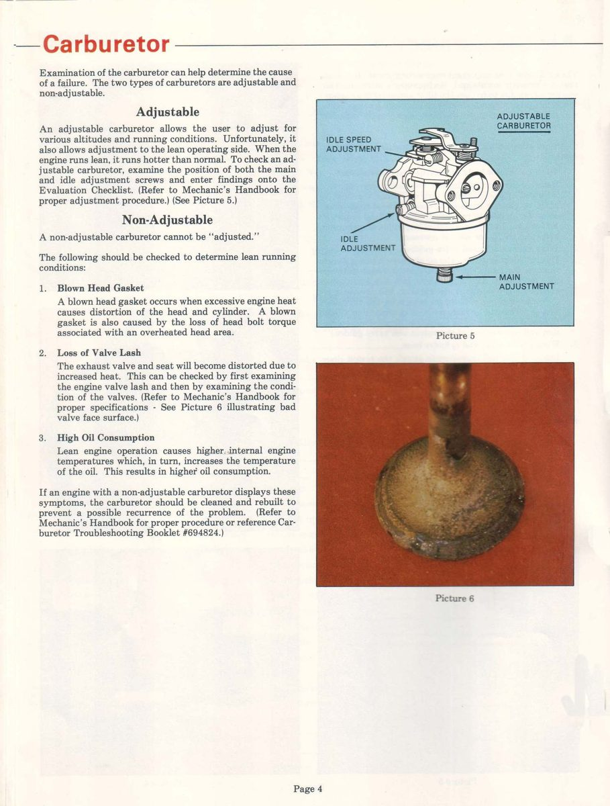

Valves are metal "mushrooms" in the cylinder head of a four-stroke. Most commuter singles have one inlet valve and one exhaust valve. Each slides in a guide, closes on a seat and is held shut by a spring.
What it does
The inlet valve opens to let fuel and air in; the exhaust valve opens to let burnt gas out. Both close tight for compression. A small gap (valve clearance) lets the valve close fully when hot. If that gap closes up, the valve cannot seat and its edge burns. A rubber stem seal stops oil running down the guide.
Signs it is worn or failing
- Low compression that does not rise with a wet test.
- Hard to start when hot and low power.
- Ticking from the top of the engine.
- Blue smoke after idling, from worn guides or stem seals.
- Popping from the exhaust can come from a leaking exhaust valve.
When to replace it
When the valve is burnt, bent or pitted, the stem is below the limit, or the seat face is too worn to recut. Replace stem seals whenever the valves come out. Follow your bike's manual.
What to match when buying
- Match engine code and position: inlet and exhaust valves are different sizes and materials. Never swap them.
- Check head diameter, stem diameter and overall length against the old valve.
- Buy new stem seals and, if the guide is worn, new guides. Good valves have a smooth, even face and straight stem.
Fitting notes
- Workshop job. Seats are cut and the contact width checked. Lap only where the maker allows.
- Fit springs with the close coils toward the head, and seat the collets fully.
- After assembly set valve clearance cold and run a compression test.
- Keep valves, springs and caps in order, intake with intake and exhaust with exhaust, so each goes back where it came from.
- After lapping, a matte ring all the way round is the goal. Do not spin a valve in a drill, use a back and forth turn.
- Test the seating with solvent in the chamber. The ports must stay dry. Clean the inlet side so no dirt reaches the seat.
Reference (K-Light 125)
| Item | Value | PDF page |
|---|---|---|
| Valve clearance (cold) | inlet and exhaust 0.05 to 0.07 mm | 202 |
| Stem OD limit | 5.40 mm | 202 |
| Guide ID limit | 5.50 mm | 202 |
| Seat width | 0.8 to 1.0 mm, limit 1.6 mm | 202 |